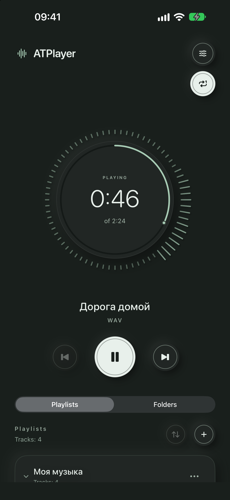
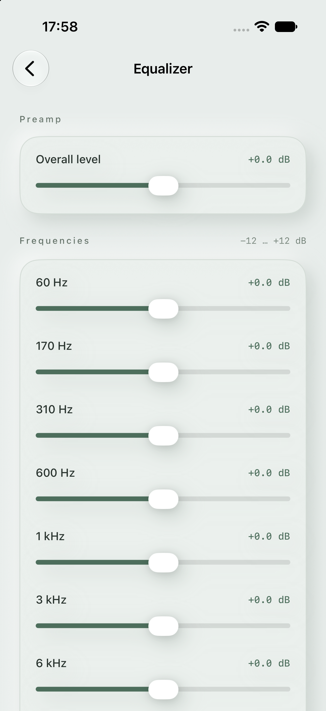
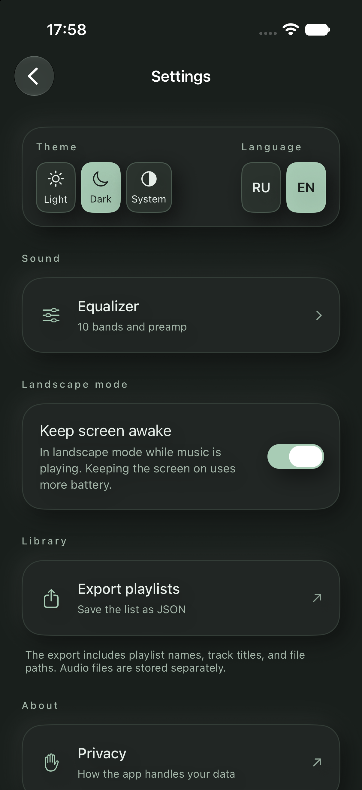

Your own files
Add audio through Files. Importing a folder into a playlist also includes its subfolders.
LOCAL AUDIO · iPHONE & iPAD
Your audio files, playlists in your order, and simple controls. No account, ads, or streaming catalog.
For iOS and iPadOS 26.0 or later.

01 / FEATURES
You choose what to hear. Your player helps you bring it together and shape the sound.
Add audio through Files. Importing a folder into a playlist also includes its subfolders.
Explore your saved folders one level at a time. Playback uses audio from the current level; browsing other folders leaves your track playing.
Create and rename playlists, then arrange playlists and tracks. Removing entries keeps the original audio files.
Control music from the Lock Screen. Live Activities work on supported devices when allowed in system settings.
A 10-band equalizer and preamp. Changes apply immediately and are saved automatically.
Seek with the circular playback indicator and watch the audio visualization.
02 / INTERFACE
Real app screens captured in version 1.3. The new radio controls in 1.5.0 are described below.
Playback and your collection, together on one screen.

10 bands and a preamp to make the sound your own.

Light, dark or system appearance. Russian and English.
03 / GET STARTED
Use the add-music button in an empty playlist, or add tracks from the playlist menu.
Select your audio files or a folder in Files.
Arrange your music, tap a track, and start listening.
PRIVACY
Playlists and preferences stay on your device. ATPlayer contains no ads or analytics SDKs and does not send your library or listening history to the developer. No account is required.
Files from iCloud Drive and other providers use those providers’ services. Support receives only the information and attachments you choose to send.
Privacy policyOpen Settings → Radio. Background 0 allows the noise to fade away; matching the background and main levels keeps a steady radio texture with natural variation. Raising the background above the main level raises both controls. Lowering the main level below the background lowers both. Main level 0 turns radio off. Track changes add no separate tuning sound. The effect processes your files locally and does not receive radio stations.
Music is not included. Use accessible audio files without DRM, such as MP3 or WAV. Playback depends on the format, file integrity, and system audio decoder.
Available local files play without the internet. Cloud and network sources may need a connection to read folders and download audio. The temporary cache can be cleared and does not guarantee permanent offline storage.
Playlists keep references to the originals, so the source files must remain accessible. JSON export contains names and paths, not audio recordings. It is not intended to restore your library in the app.
The music is already yours. Just press play.